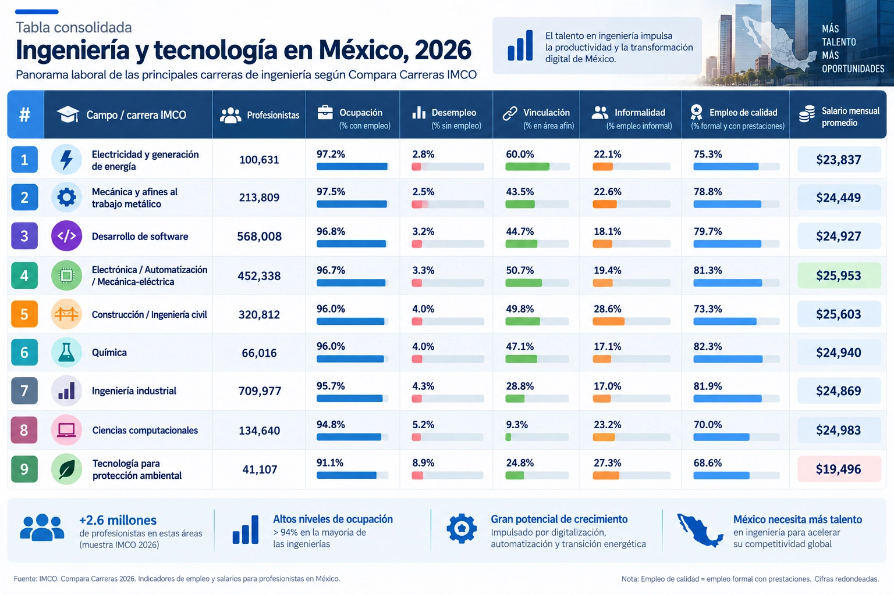
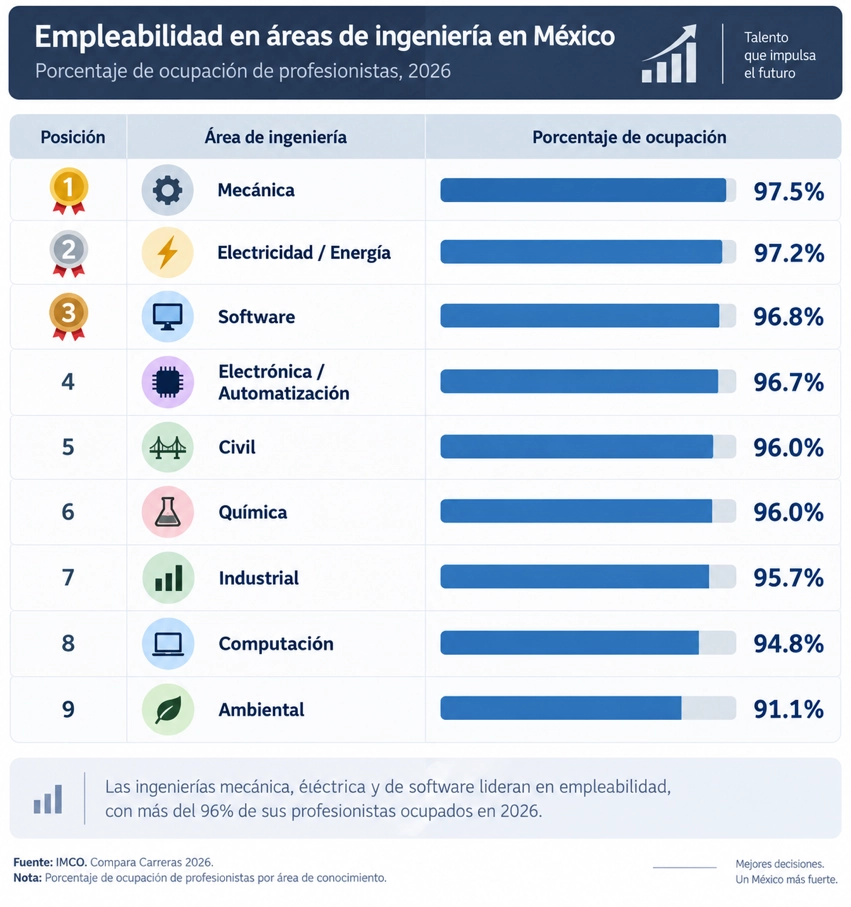

Una investigación sobre demanda laboral, empleabilidad, tecnologías emergentes y nuevas competencias profesionales en México frente a la inteligencia artificial y la transformación industrial.
El cambio no consiste únicamente en sustituir una ingeniería por otra, sino en transformar el conjunto de competencias que acompaña al título de ingeniería.
Los datos de la investigación muestran por qué no basta con observar una sola métrica para evaluar una ingeniería.
La investigación propone separar las dimensiones para evitar confundir empleabilidad, tamaño de mercado y crecimiento.
Ocupación, desempleo, informalidad, empleo de calidad y vinculación.
Sectores donde trabajan actualmente los profesionistas y dónde se concentra la actividad.
IA, automatización, manufactura avanzada, nearshoring, semiconductores, energía y datos.
Una síntesis visual del argumento central del estudio.
Fundamentos técnicos y conocimiento especializado.
Datos, software, cloud y conectividad.
Asistencia, predicción, automatización de tareas y decisión.
Robótica, control, sensores y manufactura avanzada.
Integra especialidad, tecnología y conocimiento del sector.
Explora la combinación de especialidad, puestos, tecnologías y sectores.
Capacidad de mantener y progresar en la carrera profesional a lo largo del tiempo

